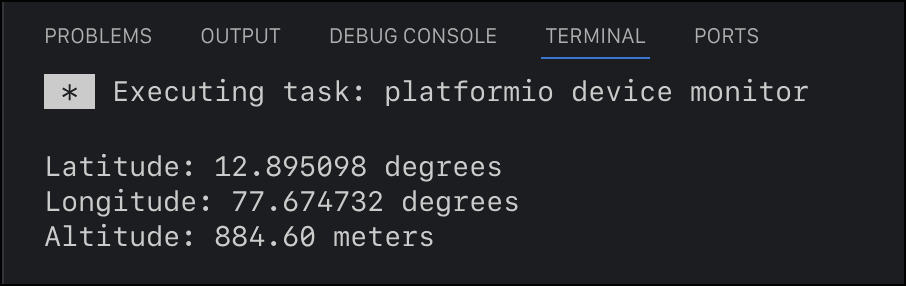
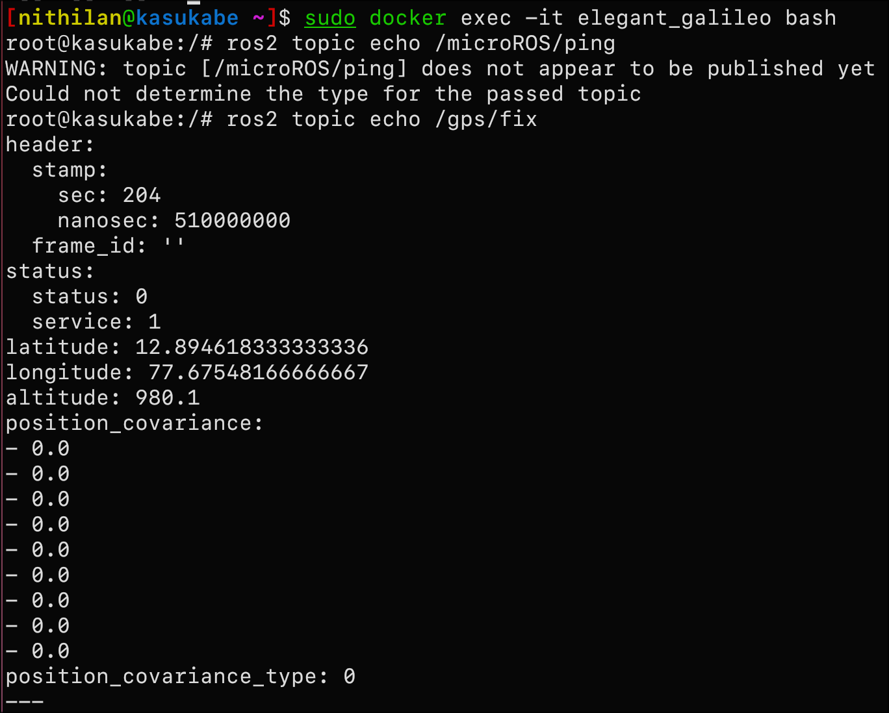

Category 1 Report - Nithilan
What I Built
I completed the Category 1 assignment, including the advanced task, and got it working on the physical Teensy board in the rover.
Success


Why I Chose Arduino SDK
Zephyr RTOS seemed like overkill for what was needed, and I still had the choice of FreeRTOS if needed.
Picking LwGPS
I went with LwGPS over TinyGPS++ because I wanted something cross-platform. Keeps the code portable to other microcontrollers or SDKs down the line, rather than being locked into Arduino.
Note on AI usage
basically all the code I wrote for this assignment was generated with inline copilot, which I guess puts it in the "vibe-coded" category? altough the gps code was so simple that I'd consider it boilerplate. While I can't recite how to use the library from memory, I do remember understanding exactly what each line did as lwGPS had really good documentation and examples.
for the ROS2 publishing part, full transparanecy, it was completely vibe coded as I did not have the time to learn micro-ros syntax in a day unfortunately, I was quite busy during the weeked. I was still able to debug some issues like bad Serial configuration and wrong topic names.
reason behind my choices
while I do regret not being able to follow the rule 1.2 "In Extension to Rules 1.1, every line of code must be inferred in accordance to your report." I prioritize getting tasks working first, then optimizing and learning afterward. While this meant sacrificing some learning opportunities for this assignment, I found that debugging and iterating on the code forced me to understand the fundamentals anyway. Learning the full intricacies can always come later, unlike deadlines.
Resources used
- Teensy 4.1 serial port info - to figure out the serial ports on the board
- LwGPS documentation beacuse lwGPS
- NMEA 0183 standard - first time learning about NMEA